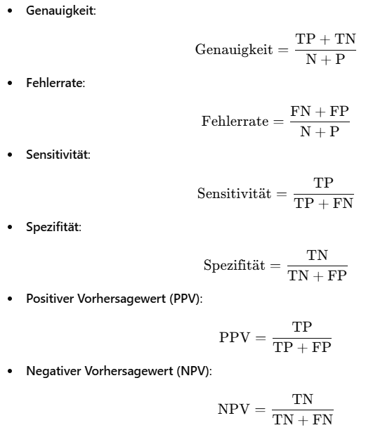

Türchen 22: Fehler Quantifizieren
Heyy, heute schauen wir uns die Formeln an, mit denen wir die Fehler eines Klassifikationsmodell quantifizieren können. Kann mir vorstellten das der Prof, wenn er verrückt drauf ist danach fragen wird, aber jaa, hier wäre erstmal eine Übersicht:
Alsoo, wir haben die folgende Konfusionsmatrix gegeben:
conf_matrix = data.frame(
Predicted_Negativ = c(45, 1),
Predicted_Positiv = c(2, 24),
row.names = c("True_Negativ", "True_Positiv")
)
Wir wollen jetzt eine Funktion schreiben, die die Formeln umsetzt. Dafür können wir erstmal schauen wie wir True Negativ (TN), False Negative (FN), False Positive (FP), True Positive (TP), daraus bestimmen. Als kleiner Tipp, für TN können wir:
TN = conf_matrix["True_Negativ", "Predicted_Negativ"]
Fehler Quantifizieren - Seite 2
TN = conf_matrix["True_Negativ", "Predicted_Negativ"]
FN = conf_matrix["True_Positiv", "Predicted_Negativ"]
FP = conf_matrix["True_Negativ", "Predicted_Positiv"]
TP = conf_matrix["True_Positiv", "Predicted_Positiv"]
Sooo, als nächstes kannst du damit schon die Formeln von der page 1 umsetzen :)
Fehler Quantifizieren - Seite 3
Lösung:
genauigkeit = (TP + TN) / (TN + FN + FP + TP) fehlerrate = (FN + FP) / (TN + FN + FP + TP) sensitivitaet = TP / (TP + FN) spezifitaet = TN / (TN + FP) ppv = TP / (TP + FP) npv = TN / (TN + FN)
Jetzt wäre es noch gut das ganze in eine Funktion zu packen die die Konfusionsmatrix bekommt und dann alle "Gütemaße" zurückgibt, z.B in einer Liste.
Fehler Quantifizieren - Seite 4
Lösung:
berechne_metriken = function(conf_matrix) {
TN = conf_matrix["True_Negativ", "Predicted_Negativ"]
FN = conf_matrix["True_Positiv", "Predicted_Negativ"]
FP = conf_matrix["True_Negativ", "Predicted_Positiv"]
TP = conf_matrix["True_Positiv", "Predicted_Positiv"]
genauigkeit = (TP + TN) / (TN + FN + FP + TP)
fehlerrate = (FN + FP) / (TN + FN + FP + TP)
sensitivitaet = TP / (TP + FN)
spezifitaet = TN / (TN + FP)
ppv = TP / (TP + FP)
npv = TN / (TN + FN)
return(list(
Genauigkeit = genauigkeit,
Fehlerrate = fehlerrate,
Sensitivität = sensitivitaet,
Spezifität = spezifitaet,
PPV = ppv,
NPV = npv
))
}
# testen
ergebnisse = berechne_metriken(conf_matrix)
print(ergebnisse)
Joaaa, das ist ein bisschen nervig diese Formeln auswendig zu lernen, maybe hast du jetzt ein besseren Überblick und hoffentlich fragt er das nicht, oder ehr hoffentlich nur Genauogkeit und Fehler, aber jaaa, tschauuu :]